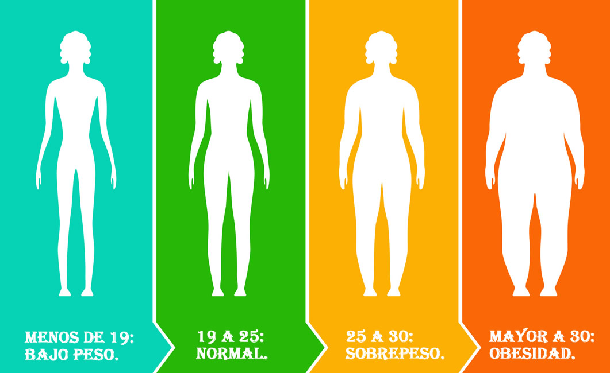

Lo que debes saber acerca del IMC

El índice de masa corporal (IMC) es el peso de una persona en kilogramos dividido por el cuadrado de la estatura en metros. El IMC es un método de evaluación fácil y económico para obtener las diferentes categorías de peso:
- bajo peso
- peso saludable
- obesidad
Es importante saber que el IMC no mide la grasa corporal directamente, pero se correlaciona moderadamente con medidas más directas de la grasa corporal. Además, el IMC parece estar tan fuertemente correlacionado con diversos resultados metabólicos y de enfermedades como lo están estas medidas más directas de la grasa corporal.